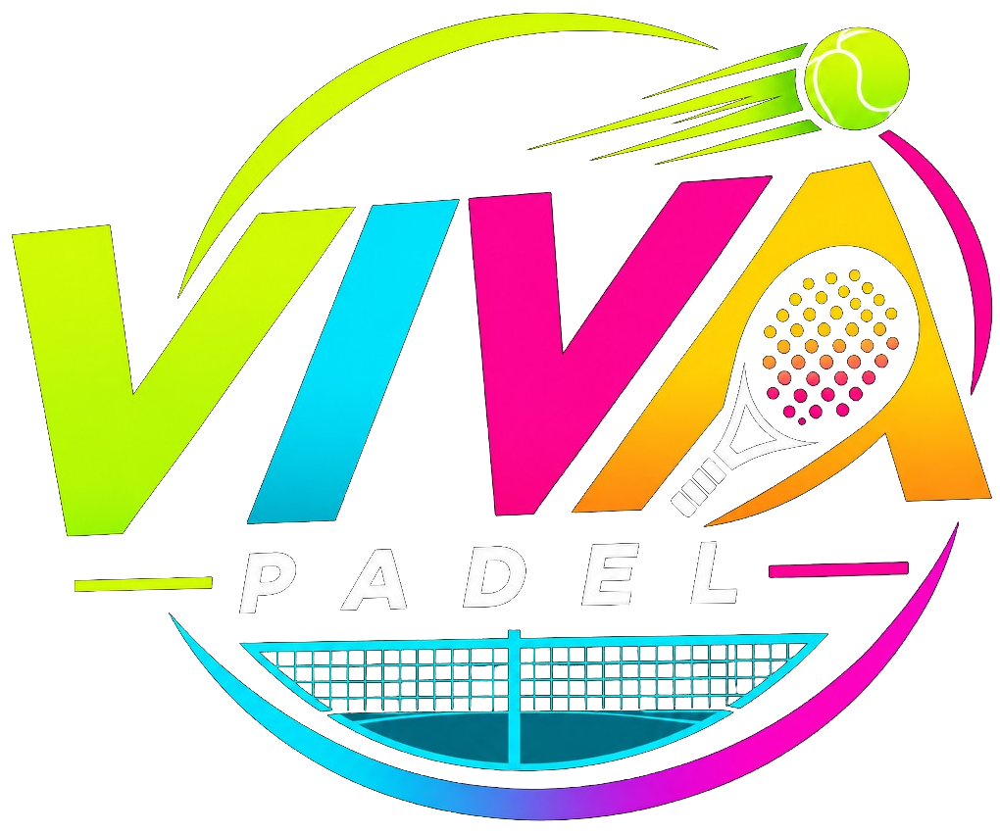
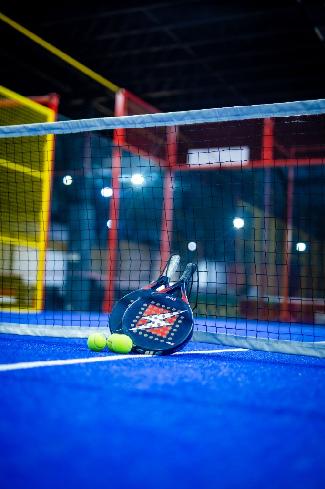

SportélményThe game
Dinamikus játék, izgalmas mérkőzések és folyamatos kihívások minden alkalommal.Fast rallies, close matches, and a new challenge every time you play.

Ismerd meg a VIVA PadeltMeet VIVA Padel
A VIVA Padel célja, hogy a sportolás és a közösségi élmények találkozási pontja legyen. Egy olyan helyet szeretnénk biztosítani, ahol a mozgás öröme, a versenyszellem és a kikapcsolódás természetesen kapcsolódik össze.VIVA Padel is where sport and community meet. We want a place where the joy of movement, a competitive spirit, and time off come together naturally.
Négy modern, fedett panorámapályánkon egész évben élvezheted a padel játékot, akár barátaiddal, akár új játékostársakkal érkezel.On our four modern indoor panorama courts you can play padel all year, whether you arrive with friends or with new partners.
Nálunk nem számít, hogy most fogsz először ütőt a kezedbe, vagy már tapasztalt játékos vagy. A lényeg, hogy élvezd a játékot, fejlődj, és minden alkalommal új élményekkel gazdagodj.It does not matter if this is your first time holding a racket or you already know the game. Enjoy it, get better, and leave with something new every time.
Pályát foglalokBook a court
Dinamikus játék, izgalmas mérkőzések és folyamatos kihívások minden alkalommal.Fast rallies, close matches, and a new challenge every time you play.
Találkozz, ismerkedj, játssz együtt, és válj egy aktív sportközösség részévé.Meet people, play together, and become part of an active sports community.
Fedett panorámapályák és kényelmes online foglalási lehetőség a gondtalan játékért.Indoor panorama courts and easy online booking, so the game stays simple.
Segítünk eligazodniWe will help you find your way
Pályát online, a weboldalunkon található foglalás gombra kattintva, a Playtomic rendszerén keresztül tudsz foglalni. Itt megtekintheted az elérhető időpontokat, kiválaszthatod a pályát, és elvégezheted a foglalást.Book online through Playtomic, using the booking button on our site. You can see open times, choose a court, and complete the booking there.
Egy foglalás alapértelmezetten 60 perc játékidőt biztosít. Amennyiben hosszabb időt szeretnétek játszani, további időpontot is foglalhattok az elérhetőség függvényében.A booking is 60 minutes of play. If you want longer, you can book another slot when one is free.
A Classic pályafoglalás 15 000 Ft-tól, a Single pályafoglalás 10 000 Ft-tól érhető el 60 percre. A pontos díj a választott időponttól függ.Classic starts at 15,000 Ft, and Single at 10,000 Ft, for 60 minutes. The exact fee depends on the time you choose.
A Classic pályafoglalás 2–4 játékos számára alkalmas, míg a Single foglalás legfeljebb 2 játékos részére szól.Classic is for 2–4 players. Single is for up to 2.
Nem feltétlenül! Amennyiben nincs saját felszerelésed, a recepción lehetőséged van ütőt kérni. Az ütőbérlés aktuális díjáról a helyszínen érdeklődhetsz.Not necessarily. If you do not have your own, you can ask for a racket at reception. The rental fee is told there.
A fizetés a Playtomic online foglalási rendszerén keresztül történik, a foglalás során megadott feltételek szerint.You pay through Playtomic while you book, under the terms shown there.
A foglalás lemondását a Playtomic rendszerén keresztül tudod intézni. A lemondásra vonatkozó feltételeket a foglalási rendszer szabályzata tartalmazza.Cancel through Playtomic. The cancellation rules are in the booking system’s terms.
Természetesen! A padel könnyen elsajátítható, élvezetes sport, amelyet kezdőként is bátran kipróbálhatsz. Hívd el barátaidat, és tapasztaljátok meg együtt a játék örömét!Yes. Padel is easy to pick up and fun from the first game. Bring your friends and try it together.